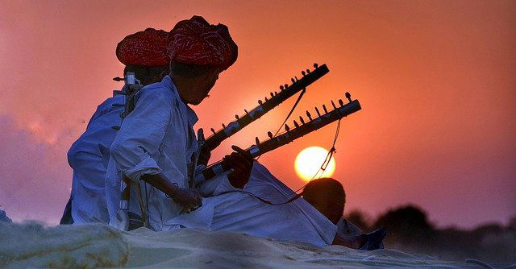

Our Other Blogs

A Walk In The Shoes Of A Dancer
Saransh Sharma

Without Music, Life Would Be A Mistake.
Soham Kulkarni

Most of today’s generation knows about A. R. Rahman, Arijit Singh, and Neha Kakkar but very few have even the slightest idea of the people who mastered the art of music, even before our entire generation opened their eyes for the very first time. Well, today is the day, when we will learn about 7 of the legends of Indian classical music. The 7 great people of Indian classical music; to whom the entire nation bowed in respect, for the mastery that they had in their respective art.
Pandit Hariprasad Chaurasia started learning Indian classical music as a kid from his neighbor. He then switched to flute at the tender age of 15. After learning for eight years he joined All India Radio, Cuttack, Odisha and worked there as a composer and performer.
Cuttack was the place where he met his mentor Annapurna Devi. Initially, she was very reclusive and refused to teach him. To show her, his passion and commitment to Indian classical music chaurasia started playing left-handed. His hardships paid off and Annapurna Devi accepted him as her disciple. From that day onwards he never looked back. He was awarded Padma Bhushan in 1992 and Padma Vibhushan in the year 2000.
Madurai Shanmukhavadivu Subbulakshmi also called MS Subbulakshmi was a legendary Carnatic singer from Madurai, Tamil Nadu. In her early childhood, She started learning music from her mother and later learn Hindustani classical music from well-renowned vocalist Pandit Narayan Rao Vyas.
A child prodigy, her first album was released when she was just 10. 1929, was the year when she first appeared on the stage for her performance in the prestigious Madras Music Academy. Her voice spellbound the audience and critics alike, and she soon became the most prominent voice of Carnatic music. She even traveled to London, Canada, New York, and the far east as India’s cultural ambassador.
She was awarded Padma Bhushan, Padma Vibhushan as well as the Ramon Magsaysay award often called Asia’s Nobel Prize. She was also awarded Bharat Ratna, India’s highest civilian honor in the year 1998. On the fateful night of 11th December 2004, MS Subbulakshmi left us alone, forever. What we have today with us, is only a few pieces of her art, the masterfully crafted music that she kept on creating again and again and again during her lifetime.
Ustad Qamaruddin Bismillah Khan often referred to as just Bismillah Khan was an Indian classical musician who popularized Shehnai in the subcontinent. Shehnai had always been present in various folk ceremonies but never did it had a chance to be a part of a concert, to face an audience on a stage.
Khan Sahab was born in Dumraon, Bihar, and was later taught Indian classical music by his maternal uncle Ali Bux Khan, also a shehnai player in Varanasi. He was 14 when he first accompanied his uncle to the Allahabad Music conference and then never looked back.
He was awarded Padma Shri, Padma Bhushan, Padma Vibhushan as well as the highly revered Bharat Ratna in the year 2001. Unfortunately, his last wish to play shehnai in front of India Gate to pay homage to the martyrs remained unfulfilled as he took his last breath on 21st August 2006.
Robindro Shaunkor Chowdhury often referred to as Pandit Ravi Shankar was an Indian Sitar player and a maestro of Indian classical music. In his early days, he accompanied his brother Uday Shankar as the later’s dance group traveled the world. It was the summer of 1938 when he decided its time to leave dancing for good.
He took up sitar under the guidance of Allauddin Khan and was appointed as the music director for Satyajit Ray’s Apu trilogy. He also took the role of director in All India Radio from 1949 to 1956. He then started touring Europe and made a name for himself as well as for Indian classical music. He often worked with The Beatles’ Guitarist George Harrison when in Europe.
It was this time when he popularized Indian classical music in the west to an extent never thought possible before. The use of Indian musical instruments that we see today in the western entertainment industry can be attributed to him. He was also the recipient of the Ramon Magsaysay Award and Bharat Ratna to name a few.
Ustad Zakir Hussain is a classical Tabla virtuoso and one of the most famous tabla players in India. Born and brought up in Mumbai, he was a child prodigy. His father started teaching him tabla when was just three and gave a concert at the age of seven.
He even toured with sitar maestro Ravi Shankar to the USA during the 70s. He was awarded Padma Shri in 1988 and Padma Bhushan in 2002 making him the youngest percussionist to receive these awards. He even won a Grammy in the 51st Grammy awards in the contemporary music category.
Shiv Kumar Sharma was born in Jammu and overtime his name has become synonymous with Santoor, an Indian classical music instrument. He was taught santoor from childhood but it was 1955 when he first gave his public performance in Mumbai.
In 1956, he was selected as the music composer for Shantaram’s Jhanak Jhanak Payal Baje. An awardee of Padma Shree and Padma Vibhushan he has collaborated with Hariprasad Chaurasia and guitarist Brij Bhushan Kabra since 1967. Their debut album Call of the Valley turned out to be a super hit and is often considered the most successful Indian classical music album.
Ali Akbar Khan was a sarod player of Maihar Gharana. He is also credited for popularizing Indian classical music in the west. He visited America in 1955 when Yehudi Menuhin called him and then settled in California, USA. He was also awarded Padma Bhushan and Padma Vibhushan among many other awards
Although most of these legends of Indian classical music are not with us today, their legacy has been cemented in history through their masterful work. One thing that we can note is, all of these legends were just common people like you and me. They also walked, ate, slept just like us. But did they reach the zenith of their success because they had dreams and passion for their work or they simply started early or they got great mentors?
Have you ever wondered how these people just like us became legends of Indian classical music? The answer is simple. They started learning music; that’s it.
Now, don’t tell me that you are thinking of killing your dreams of learning music because of your schedule and other commitments. Go to school, get grades; show your grades, get a job; go to job, earn money; save money, spend on family; get old and die.
Is this what you are going to do? When will you do what you always wanted to do? This life is short, stop living someone else’s life.
Click on the link and register with the best music academy in your city
https://www.facebook.com/sangeeta.academy/
If you are still thinking, then you need to watch other passionate people fulfill the dreams of their lives.
https://www.instagram.com/sangeetaacademythane/?igshid=1nnvgjb5ulyw5
All the best for your music lessons ustad.
Built with Mobirise